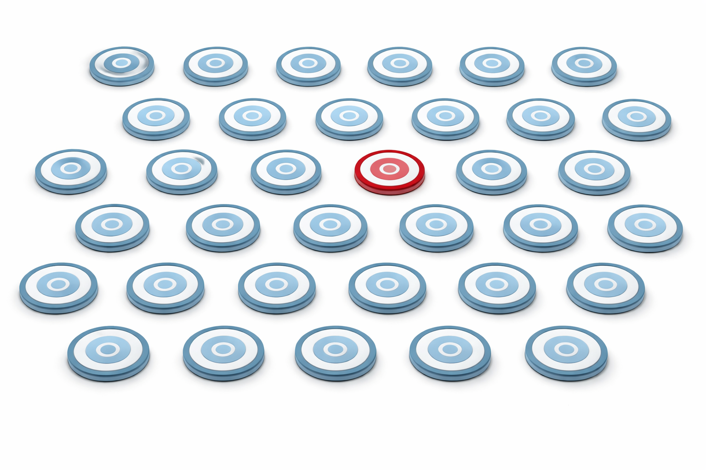

I’ve always been torn between the elegant certainty of mathematics and the beautiful complexity of biology, so I decided to master both. My obsession with healthcare data science began at IIT Delhi, where I spent my Master’s thesis translating the abstract constructs of evolution into mathematical models. That research spark eventually took me to Harvard University, building computational drug discovery frameworks for DARPA-funded projects, followed by a summer at Vertex Pharmaceuticals while finishing Data Science Degree at Columbia University. Today, I’m a Senior Data Scientist on the Experimental AI team at AbbVie, where I translate complex statistical theory and AI to build enterprise-ready solutions. Whether it’s decoding disease at the discovery stage or building audit-ready AI solutions, I live for the moments where rigorous algorithms meet clinical innovation.
Experience across Drug Lifecycle
Industry Experience
AbbVie Inc (2023 - Present)

Anomaly Detection
Built GLMM-based unsupervised models to identify atypical site behavior, flagging high-risk sites across global trials.
Medical Monitoring
Led Isolation Forest patient monitoring, reducing review time by 90% via SHAP-based interpretability workflows.
Wyss Institute at Harvard University (2019 - 2022)

AI Drug Discovery
Developed Markov Random Field frameworks for protein-target interactions, accelerating therapeutic discovery throughput.